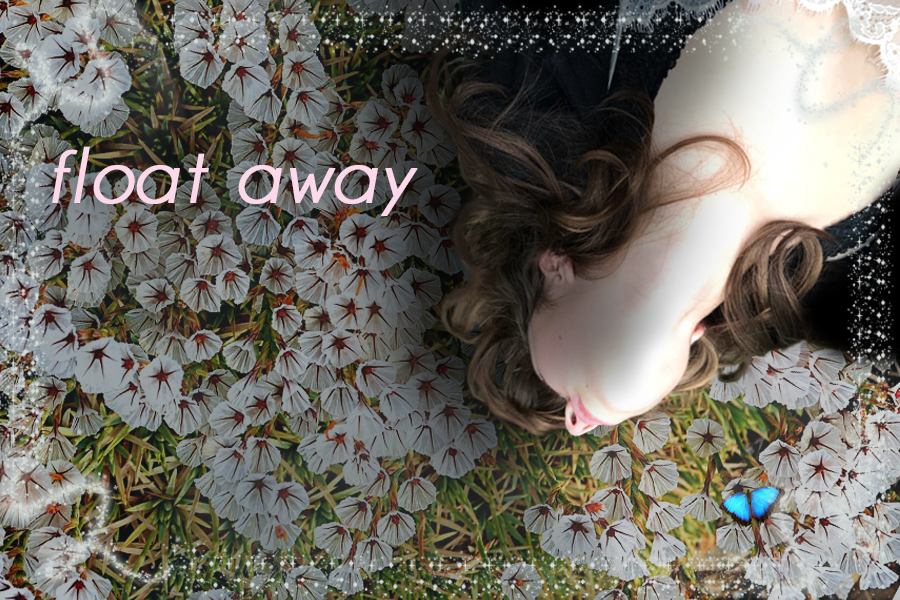

I loved making this piece with Photoshop. I have used photoshop before, but it was mostly just for the most basic features such as a little bit of color manipulation, resolution and size changing, and deleting backgrounds to create transparency. I wanted to have my “selfie” not really showing my face that much so I could think of it more like a form to work with rather than a picture of myself. I wanted to include all of the things that I visually love. In my day-to-day life I love being surrounded with flowers, so I wanted to bring that element into this piece. It was fun to play with the different layer effects to create this. I used a picture of smoke that I found and used a blending effect to have the flower layer draw the values from that picture into my background flower picture.